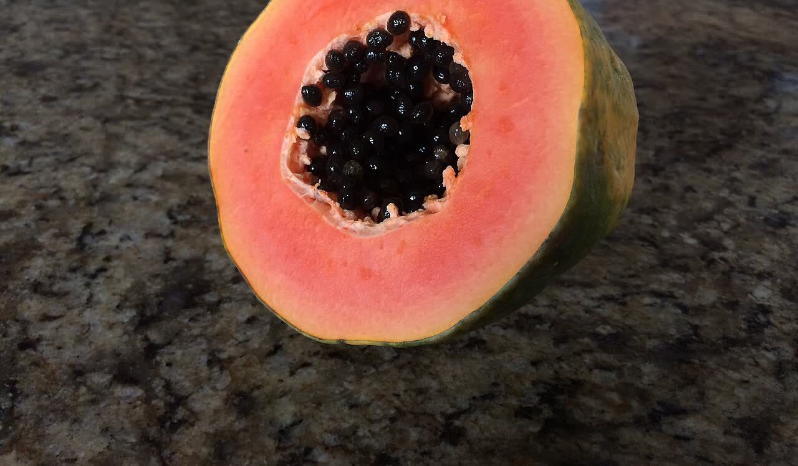

降低化学反应活化能的酶（下）：酶的特性
本期导读
高效性 · 专一性 · 作用条件较温和

视频原话 · 导读3 句
- 同学们好！这节课梳理人教版必修一第五章第一节的下半部分——酶的特性。7.3s
- 高考常考酶特性的实验设计、温度和pH的影响曲线，以及实验材料和检测试剂的选择。8.7s
- 我们按八个考点梳理，每个考点都讲清楚怎么考、怎么做。5.5s
高效性01#
酶的催化效率约是无机催化剂的 107～1013 倍
酶 vs 无机催化剂
证明高效性（过氧化氢酶 vs FeCl3）
酶 vs 不加催化剂
只能证明酶有催化作用
易错
高效性是与无机催化剂相比得出的，对照组要选无机催化剂
视频原话3 句
- 考点一，高效性。酶的催化效率大约是无机催化剂的107～1013倍。8.4s
- 证明高效性，要用酶和无机催化剂作对照，比如过氧化氢酶和FeCl3。7.4s
- 易错：酶与无机催化剂比较才体现高效性；酶与不加催化剂比较，只能说明酶有催化作用。8.9s
专一性02#
每一种酶只能催化一种或一类化学反应
| 比较项目 | 1 号试管 | 2 号试管 |
|---|---|---|
| 底物 | 可溶性淀粉溶液 | 蔗糖溶液 |
| 加入的酶 | 淀粉酶溶液 | 淀粉酶溶液 |
| 检测试剂 | 斐林试剂（水浴加热） | 斐林试剂（水浴加热） |
| 现象 | 砖红色沉淀 | 无砖红色沉淀 |
易错
不能用碘液检测：碘液无法判断蔗糖是否被水解
解题方法
验证专一性：同酶异底或同底异酶
视频原话4 句
- 考点二，专一性。每一种酶只能催化一种或一类化学反应。6.3s
- 实验：用淀粉酶分别作用于淀粉和蔗糖，再用斐林试剂检测——淀粉组出现砖红色沉淀，蔗糖组没有。10.1s
- 易错：这个实验不能用碘液检测，因为碘液无法检测蔗糖是否被水解。7.2s
- 解题方法：验证专一性，可以同一种酶、不同底物，也可以同一种底物、不同的酶。7.8s
作用条件较温和03#
需要适宜的温度和 pH；在最适温度、最适 pH 下活性最高
高温、过酸、过碱
空间结构破坏 → 永久失活
低温
只抑制活性，空间结构稳定，温度适宜时可恢复
考法
酶适宜在低温下保存；低温不会使酶变性失活
视频原话4 句
- 考点三，酶的作用条件较温和。酶需要适宜的温度和pH，在最适温度和最适pH下活性最高。9.7s
- 过酸、过碱或温度过高，会使酶的空间结构遭到破坏，使酶永久失活。7.2s
- 低温只是抑制酶的活性，酶的空间结构稳定，温度适宜时活性可以恢复。7.0s
- 考法：酶适宜在低温下保存。易错：低温不会使酶变性失活。6.7s
温度对酶活性影响04#
- 超过最适温度，活性降低
- 低温：活性低，未失活
- 高温：变性失活，曲线降到零
解题方法
同一活性对应两个温度：高温一侧已部分失活，降回最适温度也不能恢复到最高；低温一侧可以恢复
视频原话3 句
- 考点四，温度对酶活性的影响。在一定范围内，随温度升高，酶活性增强；超过最适温度后，酶活性降低。10.8s
- 低温时酶活性很低，但没有失活；温度过高，酶会变性失活，曲线降到零。7.5s
- 解题方法：同一活性对应两个温度时，高温一侧的酶已部分失活，降回最适温度，活性也不能恢复到最高；低温一侧可以恢复。12.0s
pH对酶活性影响05#
- 每种酶都有最适 pH
- 过酸、过碱都使酶变性失活
- 胃蛋白酶约 1.5；动物体内多数酶 6.5～8.0
易错
过碱调回最适 pH，活性不能恢复；改变温度不影响酶的最适 pH
视频原话4 句
- 考点五，pH对酶活性的影响。每种酶都有最适pH，偏离最适pH，酶活性都会降低。9.5s
- 过酸、过碱都会使酶变性失活，所以曲线两端都降到零。6.1s
- 不同的酶最适pH不同：胃蛋白酶的最适pH约为1.5，动物体内的酶最适pH大多在6.5～8.0之间。11.0s
- 易错：pH从过碱调回最适，酶活性不能恢复；改变温度不影响酶的最适pH。8.7s
探究温度实验选材06#
- 淀粉、淀粉酶分别保温到各温度
- →混合
- →保温一段时间
- →滴加碘液看蓝色深浅判断剩余淀粉
不用斐林试剂
需要水浴加热，会改变实验温度
不用过氧化氢酶
H2O2 受热本身会分解
易错
一定要先分别保温，再混合，否则反应在未达设定温度时已经开始
视频原话3 句
- 考点六，探究温度对酶活性的影响。常用淀粉和淀粉酶，用碘液检测淀粉的剩余量。8.4s
- 要先把酶和底物分别保温到相应温度，再混合，保证反应一开始就在设定的温度下进行。8.5s
- 易错：不能用斐林试剂检测，因为它要水浴加热，会改变温度；也不能用过氧化氢酶，因为H2O2受热本身会分解。11.1s
探究pH实验选材07#
- 过氧化氢酶肝脏研磨液
- →不同 pH 缓冲液处理
- →加入过氧化氢溶液
- →观察气泡多少
一般不用淀粉和淀粉酶
淀粉在酸性条件下也会水解，干扰结果
易错
要先调 pH，再加底物；温度是无关变量，各组相同且适宜
视频原话3 句
- 考点七，探究pH对酶活性的影响。常用过氧化氢和过氧化氢酶，观察气泡产生的多少。9.8s
- 要先用不同pH的缓冲液处理酶，再与底物混合。4.9s
- 易错：一般不用淀粉和淀粉酶，因为淀粉在酸性条件下也会水解，干扰实验结果。8.2s
底物与酶浓度08#
- 底物浓度↑ → 速率先↑，后受酶浓度限制
- 底物充足：速率与酶浓度成正比
解题方法
拐点前：限制因素是横坐标所示因素；拐点后：限制因素是其他因素（如酶的数量）
视频原话3 句
- 考点八，底物浓度和酶浓度的影响。底物浓度增大，反应速率先增大，后来受酶浓度限制，不再增加。10.5s
- 在底物充足时，反应速率与酶浓度成正比；酶浓度提高，曲线的平台也随之升高。8.1s
- 解题方法：曲线拐点之前，限制因素是横坐标表示的因素；拐点之后，限制因素是其他因素，比如酶的数量。10.7s
易错速查✓
先自己判断，再点按钮查看对错与解析。
- 1酶与不加催化剂对照可证明高效性说法错误：应与无机催化剂对照
- 2可用碘液检测淀粉酶对淀粉和蔗糖的作用说法错误：碘液无法检测蔗糖是否水解
- 3低温和高温都会使酶永久失活说法错误：低温只是抑制酶的活性
- 4探究温度对酶活性的影响可用过氧化氢酶说法错误：H2O2受热会分解，不宜选用
- 5酶适宜在低温下保存说法正确。
- 6底物充足时，反应速率与酶浓度成正比说法正确。
高温过酸过碱失活，低温只是抑制！
视频原话 · 易错速查5 句
- 最后，用六道判断题检验一下。3.6s
- 判断一？错，要和无机催化剂对照。判断二？错，碘液检测不了蔗糖是否水解。9.3s
- 判断三？错，低温只是抑制。判断四？错，H2O2受热会分解。8.4s
- 判断五？对。判断六？对。4.7s
- 八个考点串成一条线：高温、过酸、过碱使酶失活，低温只是抑制。我们下期再见！8.6s
图片来源
图片来源：Wikimedia Commons —— AWOLish《Half a papaya showing the seeds 2016》CC BY-SA 4.0（已裁切）
Photo: AWOLish, CC BY-SA 4.0